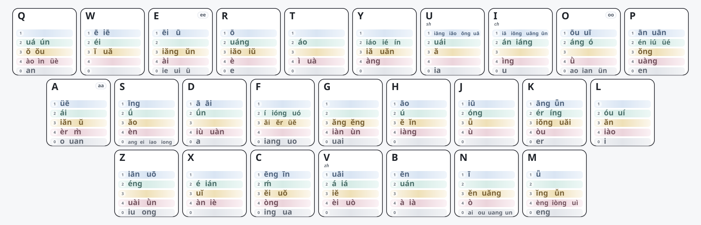

万象带调双拼：设计与复现¶
万象带调双拼的核心目标不是平均分配韵母，而是利用声调信息离散常用二字词，优先保证高频词首选。键位均衡和手感优化都在这一目标之后进行，虽然尽力避免，但这种模式下，要想离散的开，qpz三个按键就不能当成摆设，所以小指按z不利索的人，又喜欢标准键位的宝宝考虑清楚，而对于我们3+3的这都不是问题。
当前键位¶
aa、oo、ee 分别表示单韵母 a、o、e 的轻声特殊编码。

1. 核心思路¶
一个音节可抽象为：
同一韵母的不同声调被视为不同 token，例如 an1、an2、an3、an4。
二字词只有在两个音节位置都没有被分开时才会得到相同编码。因此，布局优化直接面向二字词首选关系，而不是单纯追求韵母均匀分布。
二字词也是主要优化对象：长词通常还能依靠第三、第四个字继续离散，而二字词在完整输入处重码会直接影响候选顺序。
2. 输入数据¶
复现需要两份固定输入：
| 文件 | 作用 |
|---|---|
zi.dict.yaml |
单字及带调读音，用于补全实际存在的韵调 token，保证单字读音覆盖 |
jichu_v12_final.dict.yaml |
二字目标词表，格式为 词<TAB>带调拼音<TAB>权重，用于首选离散、词频优先级和当前负载/手感统计 |
当前发布口径包含 27,398 个二字读音目标和 169 个带调韵母 token。
二字词权重同时承担两个作用：
- 决定同码词的首选顺序，并参与分层优化。
- 统计带调韵母和固定声母的使用质量，用于实体键负载与手感优化。
固定输入词表是复现条件的一部分。词条或权重发生变化后，source-first、竞争关系和最终冲突数量都可能改变。
3. 首选目标与优先级¶
3.1 Source-first¶
原始读音结构完全相同的一组词无法同时成为唯一首选。模型先按权重确定该读音组的 source-first 目标，再优化这些目标能否在最终布局中保持首选。
同一个目标即使被多个竞争词压住，也只计一次损失。
3.2 高频优先¶
| 优先级 | 目标权重 | 优化顺序 |
|---|---|---|
| 1 | >= 100000 |
COUNT → WEIGHT |
| 2 | 30000–99999 |
COUNT → WEIGHT |
| 3 | 10000–29999 |
COUNT → WEIGHT |
| 4 | 4000–9999 |
COUNT → WEIGHT |
| 5 | 1000–3999 |
COUNT → WEIGHT |
COUNT 先最小化次选词数量；数量固定后，WEIGHT 再尽量把损失留给较低权重词。高优先级层一旦锁定，低频层不能以牺牲高频词为代价改善自身结果。
3.3 当前发布审计¶
经过求解、词频合理性复核和重新审计后，当前剩余冲突为 510 条：
| 权重层 | 剩余冲突 |
|---|---|
>= 100000 |
0 |
30000–99999 |
0 |
10000–29999 |
0 |
4000–9999 |
5 |
1000–3999 |
505 |
| 合计 | 510 |
4000+ 当前剩余 5 个目标：长焦、隔了、美满、议题、电竞。
510 是最终发布词表重新审计后的结果，而不是对旧求解报告的人工删减。
4. 硬约束¶
- 一至四声分离：同一韵母的一、二、三、四声必须落在不同按键。
- 轻声策略：默认
neutral_policy = free，0 调可与同韵母其它声调共键；distinct则要求轻声也分开。 - 每键容量：
--max-per-key是搜索约束，不是方案理论。当前历史布局使用8作为复现参数；研究新布局时可以放宽。
5. 两阶段优化¶
5.1 二字词离散¶
第一阶段先在抽象桶中优化 token 分组，不绑定真实 QWERTY 键位，以减少键位标签造成的对称搜索。
主要步骤：
- 建立带调 token 和声调硬约束。
- 根据二字词竞争关系建立首选软约束。
- 按词频层级执行
COUNT → WEIGHT词典序优化。 - 锁定已经得到的高优先级结果。
这一阶段决定哪些带调韵母必须分开，哪些可以共桶。
5.2 实体键联合细化¶
首选层锁定后，再把 token 分组与真实 QWERTY 键位联合优化。后续目标不能恶化已经锁定的首选层。
优化顺序为：
- 键位使用代价。
- 最大实体键总负载。
- 冷键上的高频 token 质量。
- 左右手交替。
- 同键双击。
- 同指移动。
- 同手同排大跨度。
- 总负载 L1 均衡。
因此，二字词离散是主目标，键位手感是在主目标边界内继续优化。
6. 权重与键位负载¶
布局不以“每键放了几个 token”衡量冷热，而按实际使用权重计算。
token_mass[token] += word_weight
initial_mass[声母键] += word_weight
total_load[key]
= initial_mass[key]
+ 该键全部 token_mass
因此，token 数量少的键也可能很热；一个高频韵调的负载可以超过多个低频韵调之和。
键位使用代价同样按 token 使用质量加权，目标值越低越好。当前历史布局的最大实体键总负载为 85,790,054，总负载 CV 为 0.3265；左右手交替约 54.40%，同键双击约 0.97%。
7. 求解后的人工复核¶
低频语料中的专名、领域词、句法片段可能造成权重偏差，因此剩余冲突继续按真实输入行为复核：
| 类型 | 处理原则 |
|---|---|
SWAP |
当前权重明显不符合实际使用习惯，修正权重后重新审计 |
PASS |
次选词通常会继续输入第三、第四字，可依靠长词自然离散 |
LAYOUT |
两边都是常见完整二字词，优先考虑重新离散 token |
REVIEW |
受行业、地域或语料来源影响明显，保留人工判断 |
人工复核用于校正语料权重与真实输入行为，修改后仍必须重新运行完整审计。
8. 复现¶
8.1 环境¶
8.2 文件¶
V12_tone_layout_optimizer.py
zi.dict.yaml
jichu_v12_final.dict.yaml
tone_final_to_key.tsv
wx_keyboard_layout.svg
8.3 重新求解¶
python V12_tone_layout_optimizer.py \
--zi zi.dict.yaml \
--jichu jichu_v12_final.dict.yaml \
--out V12_balanced_global \
--max-per-key 8 \
--neutral-policy free \
--tie-policy allow \
--priority-mode lexicographic \
--tier-thresholds 100000,30000,10000,4000,1000,0 \
--workers 8
--max-per-key 8 用于复现这一版历史求解条件，并非固定理论限制。
8.4 只检查输入矩阵¶
python V12_tone_layout_optimizer.py \
--zi zi.dict.yaml \
--jichu jichu_v12_final.dict.yaml \
--matrix-only \
--out V12_matrix_check
固定输入首先应核对：
9. 可复现性的含义¶
方法复现：固定脚本、单字表、最终二字词表和参数后，可以重建相同的优化问题和审计逻辑。
布局复现：CP-SAT 包含限时、多线程阶段，部分阶段状态为 FEASIBLE，重新求解可能得到质量相同或接近、但逐键不同的布局。需要精确复现当前发布键位时，以 tone_final_to_key.tsv 为版本快照。
FEASIBLE 表示已找到满足约束的可行解，但未证明最优；UNKNOWN 也不能解释为目标不可实现。
10. 主要输出¶
| 文件 | 作用 |
|---|---|
tone_final_to_key.tsv |
token 的最终按键、显示形式和使用质量 |
wanxiang_tone_layout.yaml |
按键到 token 的完整布局 |
wanxiang_tone_algebra.clean.yaml |
可部署的 Rime algebra |
source_first_global_audit.tsv |
全部目标的最终首选审计 |
unresolved_review.tsv |
剩余次选目标及实际压位词 |
bucket_load_summary.tsv |
声母、韵调和实体键总负载 |
handfeel_summary.tsv |
左右手、双击、同指、跨度和键位代价 |
v12_solver_summary.json |
优化阶段、证明状态和最终指标 |